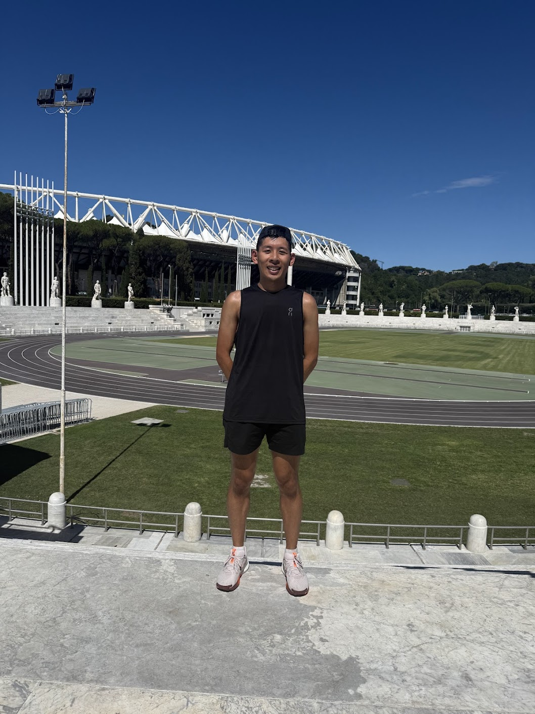
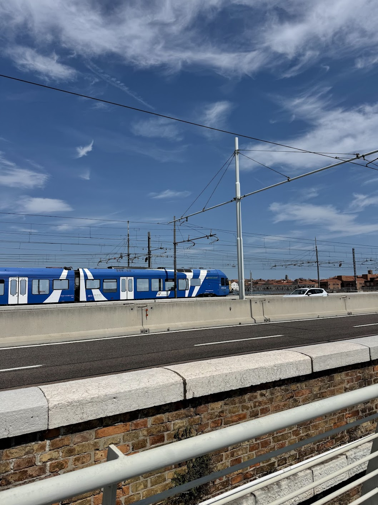
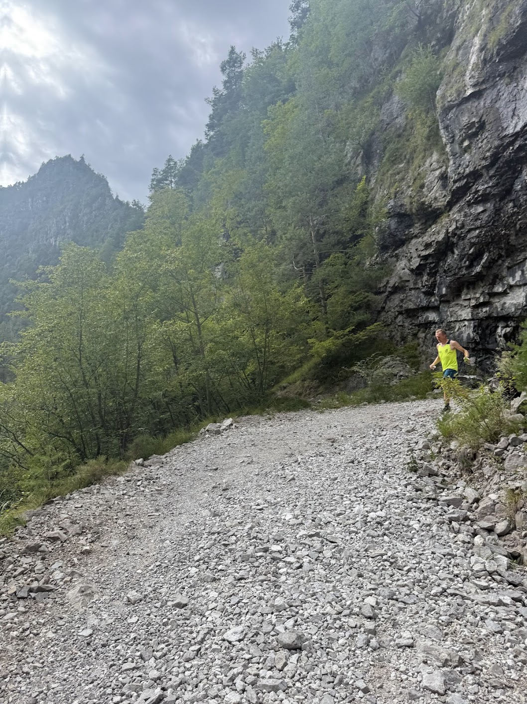

Fastpacking Alta Via 1
This July, I went to Italy and did the Alta Via 1 trail in the Dolomites in the Italian Alps. For those not familiar, the Alta Vias (literally: "high roads") are a series of long distance routes in Italy that go through mountainous terrain. Alta Via 1 is the most famous of these routes and begins at a lake called Lago di Braies and ends at a road in La Pissa, near Belluno. The area can be accessed via a 1-2 hour drive from Venice. The trail spans a total of approximately 75 mi (120 km) in distance and 25,000 ft (7,500 m) in elevation gain, almost the height of Mt. Everest! Those hiking often complete it in 9-10 days while those trail running can finish it in as few as 4-5 days, depending on fitness levels and interest in spending more or less time at the various huts (referred to in Italy as rifugios). My friend Angela and I decided to fastpack (combination of trail running + backpacking) it in a total of 5 days, which meant we needed to cover an average of around 15 mi (24 km) and 5,000 ft (1,500 m) per day.
Alta Via Routes 1-6 in the Dolomites
Pre-Trip Planning
We committed to doing the hike quite late (around the end of June) compared to most people. Due to the increasing popularity of routes like Alta Via 1 and also the famous Tour de Mont Blanc (TMB), the huts are often booked out far in advance, with people often planning their summer trips over half a year out or even in the fall of the year before. We heard some of the most popular huts are already sold out for the summer by January. Many people also book through agencies for more cost at the tradeoff of peace of mind, but we chose to book the huts ourselves (which can be done through websites or via e-mail). Luckily, since it was just the two of us and with a lot of refreshing of tabs, we were able to book two beds for the four nights of huts by July 8, just over three weeks before the start of our hike. In the event that no huts are available, some backup options to still do the hike are to take buses at the end of each day to nearby accommodations, to camp (supposedly legal in Italy after sunset and before sunrise), or just to to do day hikes instead of the whole Alta Via.
Pre-Trip Packing
Since this was my first time doing a multi-day hike, I had to borrow and buy some things in NYC before my trip. For the backpack, my experienced backpacker friend Jared (who has previously done Alta Via 2) generously lent me his Fastpack 20L bag. I then went with my other experienced outdoorsman friend Talal to the REI in SoHo (which supposedly has a full-year return policy if you sign up to be a member) to buy a Katadyn 1L water filter, a Black Diamond headlamp, and a Cocoon sleeping bag liner.
Then we went to the Nike store in Soho and I bought a pair of Nike Pegasus Trail 5 trail running shoes, which I felt made sense for me since my road running daily trainers are the Nike Pegasus. Some differences between the trail Pegs and the regular Pegs are that the trail versions have a thicker outsole and more durable upper to withstand tough conditions. However, you can also wear the trail runners as a regular road running shoe as well, which I also did with no issue. I was recommended by multiple people not to get the GoreTex version of the trail runners since those are intended to be waterproof, which also means water cannot go out.
Apart from these purchases, for clothes I packed some tank tops, shirts, shorts, underwear, pants, socks, a quarter-zip, and a jacket. Given the variable weather in the mountains, layers are important since there are some days where the weather can be in the high 70s Fahrenheit (low 20s Celsius) and other days where the weather can be in the low 40s (low single digits Celsius) – on our hike, we even got a hail warning on one day. There are also often afternoon thunderstorms in the mountains, so a good waterproof layer is important (as I was to discover). As always, sunscreen is important when spending a lot of time outdoors.
For electronics, I brought my iPhone, Apple Watch, AirPods, my Anker battery pack, a universal converter, and a variety of charging cables for my phone, battery pack, watch, etc. Angela also brought a satellite phone in the event of an emergency as most of the areas on the hike do not have service. For the huts, I brought a small towel for showering and hut sandals for walking around (although some huts had both of these to borrow). I did not bring hiking poles since I never used them before and didn’t want to try something new for a multi-day hike, but in retrospect I could see how they could be useful.
Pre-Trip Preparation
In terms of fitness, I felt quite prepared for the hike as I’ve been road running for a few years now in New York and have kept up a steady dosage of weekly mileage for the past couple years (around 50 miles per week these days). Having run two 107mi weeks training for the Copenhagen Marathon in the spring, the distance seemed manageable (especially given we had the whole day from breakfast to dinnertime to get between the huts). The main thing that intimidated me was the elevation gain, since I had never done this much elevation in such a short span of time (I was hoping that all the Harlem Hills would have prepared me well) so I was unclear how my body would respond. As mentioned earlier, it was my first time doing a multi-day hike as well as my first time doing trail running, but luckily Angela is very experienced in both these areas so I was fortunate to be doing it with her rather than solo. The morning of the day I flew out to Italy, I ran the NYRR 5M Team Champs race where I was happy with my time, so I felt like I was in good fitness.
2025 NYRR 5M Team Champs - 84th - 27:12 (5:27/mi)
 A Few Days in Rome
A Few Days in Rome
I flew out a few days before the hike on international business class for the first time (snagged a solid 55k Alaska Airlines mileage redemption on American Airlines metal from JFK to FCO thanks to Justin!). I then spent a few days in Rome where I met up with my friend Celine. In Rome, I did some fun runs, including two runs by the River Tiber (running north + running south), a fun interval workout at the Foro Italico which was built by Mussolini to try to get the 1940 Olympic Games to Rome, and a run in the Villa Borghese, a landscape garden built by the cardinal Scipione Borghese. I also did a cool bike ride on the Via Appia Antica, a cobblestone road and UNESCO world heritage site with 2,300 years of history. Finally, I had a lot of good pasta, pizza, bruschetta, porchetta, and gelato in Rome!

Running around Rome
Travel to Cortina
The day before the hike, I took the Frecciarossa train from Rome up to Venice Mestre (on the mainland). During my layover in Venice, I rented a city bike and did a quick bike ride to downtown Venice across the Ponte della Libertà and then ran back the same way to the train station, where I bought some snacks at a Chinese supermarket for the trail (I was surprised to find a Chinese supermarket here, but I suppose Venice is where Marco Polo departed to China from after all). I bought some fruit snacks, sour straps, chocolates, and sachima before then taking the Cortina Express bus (where I met up with Angela) to Cortina d’Ampezzo, where we stayed the night before the first day of the hike.

Cool trainspotting on the Ponte della Libertà
Cortina is a famous mountain town which will be host to the 2026 Winter Olympics next year. We walked around the quaint little downtown and saw a bunch of shops, but didn’t have too much time to explore due to time constraints. It would be cool to visit again in the wintertime for skiing. The hotel we stayed at was able to accommodate luggage storage for a reasonable cost (3€ per bag per night) until we returned to Cortina after the end of the hike. We had a yummy dinner at the hotel before packing our bags the night before resting up for our first day of hiking!
Nice dinner the night before in Cortina
For the next part of this post, I journaled my reflections at the end of each day of the hike on Strava, so I’ll simply copy those daily logs over here. They are a bit lengthy but I think they helped capture the essence of whatever was top of mind for me on each day! Feel free to read or skip at your leisure. Below the day 5 log, you can read my reflections on the trip overall.
Alta Via 1 - Day 1 (0–18km)
I’m back in the mountains! First time fastpacking / trail running and the most elevation (5k+ feet) that I’ve ascended in a day. Italian Alps views were beautiful and had a great time!
We got up at 7am and ate breakfast at the hotel before making the 20 minute walk to the bus stop. We then took the 445 bus to Dobbiaco and transferred to the 442 bus to Lago di Briaes (reservation needed). The first stretch by the lake was crowded with tourists (as expected) until we made a left to begin our ascent.
The ascent was challenging and my first big uphill climb in a while (I haven’t done too many of these types of climbs other than Faulhorn in Switzerland and Mt Panorama in Kazakhstan). We steadily made progress and made it to the top in due time (mostly hiking to this point), stopping for lunch at 12:30pm at Rifugio Biella (the pasta all’Amatriciana was great)!
Lago di Brieas and first day of climbing
We got there right in time, as the afternoon thunderstorms started right after we entered the hut, dumping rain and making it difficult to proceed. We decided to try waiting out the rain for as long as we could until we decided at 2pm that we had to go so that we could make it in time to our hut for dinner.
At this point, we started trail running a bit (my first time ever) which was harder than expected with the backpack. Nevertheless, it was quite a fun experience, and it helped make the rainy miles go by faster. Soon later, the weather cleared up again and we made another stop at the rifugio in Sennes.
After that, we had a long descent to Pederü, where we stopped and layed down for a bit and admired the view (so pretty!). Finally, we made our final climb (heart rate finally went above 150) up to Fanes, where we chatted with a cool Dutch couple who was also doing a multi-day hike for the first time. We said goodbye to them as they parted ways at Fanes.
We finally got to our hut in Lavarella at 5:30pm, just in time to take a shower and catch dinner at 6pm! All in all, it was a great day, and looking forward to what‚Äôs next! üòä
Pretty views on the first day
Alta Via 1 - Day 2 (18–43km)
Treacherous day of hiking / running in the pouring rain for almost all of it, everything got completely soaked. Lots of type 2 fun and made completing it all the more fulfilling!
We woke up at 6:15am and ate breakfast at 7am at Lavarella hut (the homemade honey was amazing!). We headed out right after breakfast to try to make as much progress as we could before the afternoon storm that was projected to hit. Upbeat mood for the first hour or so, as we made some trail friends!
Good start to the day!
We ran into the same Russian hiker from Munich that we saw at lunch yesterday, who told us he was here on a weekend trip (four hour drive) and who was actually camping (the tent in his pack sure looked heavy). We also chatted in Mandarin with a nice Chinese-Canadian couple from Markham who told us they had done UMTB previously and were here for a few weeks, including doing hut to hut in 10 days. Cool to see some fellow Chinese hikers out on the trail (the demographic here is mostly Europeans / Americans)!
We then started an ascent where we met a couple of Australians from Brisbane who were also fastpacking AV1 hut to hut in 5 days. I had responded to the guy‚Äôs echolocation shout of ‚Äúcooee‚Äù with the same, not realizing it was an iconic Aussie phrase, since he later approached me by asking which part of Australia I was from, to which I responded New York. The guy said the two of them had started road running earlier in the pandemic for a year or two before transitioning into trail running the last three years, but might go back for a road PR at the Gold Coast Marathon (I‚Äôve heard this one is fast). He also said I look like I‚Äôm a fast runner, which I took as a compliment. üòÖ
Crazy descent to Lagazuòi
We continued running with the Australians for a bit down a crazy descent into Lagazuoi with a ton of switchbacks. The rain was still manageable at this point, and the view of the lake emerging from the clouds was just amazing. After the lake, we entered another ascent alongside the Aussies until we finally parted ways near Rifugio Lagazuòi.
In the interest of time / avoiding the storm, we decided not to make the diversion to Rifugio Lagazuòi (our hut for the night was also further than theirs), which would have been another mile / 500ft of elevation each way. We tried continuing to Falzarego, but while we were chatting, we somehow got off our intended route. After analyzing for a bit, we decided to renavigate to a new route, including going slightly off the main trail. Adaptibility is important in the mountains. We continued on as the rain was really dumping on us now, when we serendipitously found a cave which we decided to take refuge in at 11:20am.
Hiding from the rain in a cave
After a short snack break in the cave, we proceeded onwards into the pouring rain and ran down another series of switchbacks and saw Cinque Torri for the first time (which Angela mentioned is a popular climbing spot, at least in better conditions). We ran through a cool tunnel and took cover under the awning of a house where we tried to plot our plan for the final stretch (as we again went off our intended route). We encountered a lot of issues using our phones in the pouring rain (with nothing dry to wipe the screens off with) and the original saved route on Angela‚Äôs watch was sadly of no use after we deviated. Putting phones in a Ziploc bag could be a good move for the future (but then maybe not as many pictures ü§î Unless I buy a camera üëÄ).
Nevertheless, spirits were still quite high despite the adversity (I love challenges!). We made yet another very muddy climb and even muddier descent (shoes have never looked so brown) -- it was quite fun problem-solving the descent since I haven‚Äôt done too many downhill runs through the mud and I think I did quite well. üòÄ There really is something special about hiking / trail running that you can‚Äôt get when you‚Äôre in New York.
A very muddy descent
As we made it past the road, we made one final ascent up to Croda di Lago on trail 434 / 437, at which point the rain finally started clearing up a bit. There was a viewpoint with a great view overlooking Cortina and after one last climbing push, we saw the lake and made it to Rifugio Croda da Lago at around 3pm.
It took a while to peel off all my wet clothes / socks / shoes and sadly I discovered I did not do a good job waterproofing the rest of the stuff in my backpack, so I am now typing this trip report up under the warm, dry covers of my bed. Another 18mi in the book and 6k feet of elevation gain. Can‚Äôt wait for dinner! üòÄ
Alta Via 1 - Day 3 (43–60km)
Another fun day on the trails, including the first 8mi with our new friend Ben, then a big climb up to Coldai, where we were rewarded with an incredible view. Lots of good convos! üòÄ
I woke up at 7:15am and ate breakfast at the hut with Ben who we met last night at dinner. He happens to be from central Jersey and also lives in NYC, which I guess I shouldn’t even be surprised by. Young techies are everywhere these days.
Snapping shots of Croda da Lago
Today was a lazier morning and after breakfast, I took a walk around Lago Fed√®ra and took some pictures while Angela waited for her clothes to dry. We also did a mini photoshoot. üì∏ After yesterday‚Äôs longer, rainy day, we decided today should be more chill with the lesser mileage and better weather. We finally headed out from Rifugio Croda da Lago at around 10:30am.
Angela, Ben, and I hiked together for the first 8 miles and the views were once again gorgeous. It was amazing to see the views of Cortina from above. We again mixed it up between hiking and trail running as we desired, and also saw some impressive mountain bikers. A light drizzle started as we approached Rifugio Citta di Fiume at 12:30pm, where we decided to stop for lunch.
More nice views on day three!
I had a good chat today with an older couple from Ann Arbor who had stayed at our same hut the previous night. The man had ran the Boston Marathon six times already and the woman talked about how the two of them had started their trail adventures in their twenties and raised their kids to do the same. This AV1 hike was a family trip for the four of them (the younger son was my age). The man told me about how he and his son had just done a hike together in the Pyrenees (between Spain and France). I hope I can still do the stuff they’re doing when I reach their age.
Lunch (gnocchi al ragù) was yummy and Angela, Ben, and I had a convo about the meaning of life. The Linzer torte dessert was good too. Afterwards, we set back out on the trail, where the weather had turned favorable again. We enjoyed more great views until we dropped Ben off at Rifugio Staulanza at around 3:20pm. It was fun making a new trail friend. Thanks Ben for all the good chats! üôÇ
Alta Via 1 has a lot of varied terrain
Afterwards, Angela and I had a choice to make between proceeding on the main road or climbing up the trail. We decided on the trail and it was mostly pleasant until we hit another tough muddy downhill stretch. It was slippery and annoying, but we made it through and ended up back on the road at Palafavera, where we also saw a ski lift. It would be fun to visit here again in the winter (in fact the 2026 Winter Olympics will be in Cortina!).
Finally, after the road, we made one last climb up to our hut at Coldai. The sun came out again, so we reapplied sunscreen, and also ran into the same guy we saw in the rain yesterday (selfie attached). The last climb up to the rifugio was among the steepest we’ve trekked so far, but the view was just incredible. Hard to describe with words, you have to come here to see it with your own eyes. We arrived at Rifugio Coldai just before 6pm and took some quick showers (5€ each).
Amazing view on last climb up to Coldai
Dinner was supposed to be served at 6:30pm, but actual food only came out at 7:20pm (which was unfortunate because I was hungry). We had a fun chat with a German woman (originally from Bielefeld -- aka the most boring city in Germany -- but who had also lived in Paris, New York, and Rome before now living in Florence) and her Italian son who just started his bachelor‚Äôs program in Berlin. We talked about AI, Europe vs. America, pasta, and he told me about the Italian phrase ‚Äúla dolce far niente‚Äù or ‚Äúthe sweetness of doing nothing‚Äù. I feel like I am a very go-go-go person in NY, so it was cool to hear his perspective on Italian culture. It‚Äôs always cool to exchange cultures when meeting people from other backgrounds while traveling. üòÑ We also ran into the Aussies, Oscar and Emma, again after dinner who we might see more of in the next two days.
Overall, it was another fun day out on the trails. I feel like we had a lot of good convos today, which I really enjoyed. Maybe that’s what life is all about. Anyways, that’s all for today. Another day, another opportunity!
Alta Via 1 - Day 4 (60–79km)
Solo hike day, so lots of time for rumination and self-reflection. Didn‚Äôt see any other souls for the last three hours on route 554, and the feeling was amazing! The silence of nature üí™
Taking it slow around Lago Coldai
Got up at 7:15am and went downstairs for breakfast at Rifugio Coldai. We decided to do a solo day today, so I set out on my own around 9am and made a circuit of Lago Coldai where I took some nice photos. Afterwards, I set out towards the southwest and made my way toward Rifugio Tissi for the first stop of the day, which required some climbing. I arrived around 11am and saw the same Italian family from dinner last night and said hi. I debated getting food at this rifugio, but it was still too early, so I continued onwards.
The next stretch was a lot of rocky downhill, which is not a surface that I enjoy traversing. The sharp edges of the rocks make it difficult to run on, and the scattered larger rocks could easily lead you to go flying in the event that you stepped on one the wrong way. Nevertheless, I persisted and eventually made it to Rifugio Vazzoler, where I ran into Angela as well as Zack / Maryanne from dinner the night before. We had a good chat over lunch about restaurants in NYC and how the pandemic affected us. For food, I ordered the tagliatelle with ragu as well as a chocolate cake for dessert and lemon soda, all of which were yummy. The Italian family showed up once again and we all took a selfie (see attached)! üòÄ Angela left first, and I lost track of time continuing to talk to the NYers until I finally headed out at 2:30pm.
Annoying rocky downhills
The next stretch started out annoying with yet another rocky downhill section, and I also got a little spooked when I saw a sign that said I still had 3h30m to go to get to our hut, when it was already 3pm. I decided to pick the pace up a bit from then on, and the route also became more fun at this point with more rolling elevation and varied terrain (both of which I enjoy). There were some sketchy sections where if you took the wrong step, you could fall off a cliff and die, so I did have to be vigilant here. Decisions “of high consequence” is the term I learned from Angela. Nevertheless, it was an exhilirating feeling and it reminded me of why hiking can be so fun.
The solo vs. pair vs. group hiking dynamic was also interesting, since I got to experience all three on this trip. I believe that each has its own pros and cons. For today’s solo hike, I barely saw any other humans for the last three hours. It really is an incredible feeling to be in the middle of nature without any other souls in sight, and it being so quiet that you could hear a pin drop. This final stretch (route 554) was one of my favorite stretches of AV1 and I stopped a bunch of times here just to soak it all in. So amazing!
Route 554, be careful here!
Finally, I got to the hut at around 5:30pm and took a shower before dinner was served at 7pm. We chatted outside with a guy from Tennessee who really likes skiing / snowboarding in Utah / Colorado. At the dinner table, I had lasagna / pork / panna cotta and we chatted with a guy from Canada and two really cool German guys, both of whom were very funny. They told us they are doing the Trans-Alps hike from Munich to Venice, which takes 4+ weeks (they are currently on week 4) and it was really cool to hear about their experience. One of the guys kind of looked like Josh Allen. üòÖ After dinner, we also chatted with an American couple who lives in Carroll Gardens (even more fellow New Yorkers!) as well as Jelle from the Netherlands (who we saw camping previously a few times now).
Tomorrow is gonna be our longest and final day, so it’s probably a good idea to sleep now. Crazy that we’re almost at the finish. This hike really has been so much fun. :') Life’s great! Ok, signing off, until next time!
Alta Via 1 - Day 5 (79–120km)
Alta Via 1 complete! 80+ miles and 25,000+ feet of elevation gain in 5 days. The best views came on the final day and I ended the day with a fast finish, racing an Italian man!
Smooth start to the last day
Woke up at 6:15am and packed my bag before breakfast at 7am, so that we would be able to leave right after we finished eating, this final day being our longest day (best for last!) We departed Rifugio Carestitato at 7:40am, our last hut of the hike. ü•≤
The first part of the day went by quite smoothly and we made it to Paso Duran (82km) rather quickly. After a brief stretch running on the road, we started a climb. At 10am, I got viciously charged at by an offleash dog, and I saw my life flash before my eyes. Luckily, the dog did not attack me and I told the dog’s owner who was apologizing that it’s okay. That episode was a bit too much excitement, though, even for me.
In the clouds and cute mountain kitty
Afterwards, we continued climbing until we made it to Rifugio Pramperet at 11am, where we grabbed a quick bite and had a ham + cheese sandwich (I wish they had mayo or any dressing -- why do Italians like all their breads so plain?) and a crostata (which was delicious). There was also a cute mountain kitty at this rifugio! We made it quick and by 11:40am, we were back on the trail.
The next part of the trail was arguably the best part of the whole AV1. We made a big climb up route 514 and saw mountain chain after mountain chain in every direction. We chatted a bit with a Korean guy we had seen from earlier (ahn young ha se yo!) and took some pictures before climbing even higher onto a ridge that I consider to be one of the best views I‚Äôve ever seen. The weather was perfect, the view was perfect, and it all made me really happy! üòÄ
On top of the world! ⛰️
I dilly-dallied for maybe a bit too long admiring the view and had to run to catch up. This was probably one of the most treacherous parts of the hike as well, with AJ and Regina from last night’s hut describing it as “hiking on a razor’s edge”. Nevertheless, we made slow and steady progress and continued on our way down through more marvelous landscapes. We also filmed some fun trail running footage (promotional materials, anyone?).
At 1pm, we started our massive 6,000+ ft descent as we entered the clouds. This is the biggest descent I’ve ever done, and despite my best efforts to trail run as much of it as possible, my knees were still not happy with all the downhill load. We made a quick stop at Rifugio Pian de Fontana at 2pm, but with no time to spare, continued onward after just a short break. We continued to make slow and steady progress, trying to catch one of the 4:27 or 5:27 buses at La Pissa.
The descent into the clouds
At around 3:30pm, when we still had around 4 miles and 1,200 ft of elevation descent to go, I said we could probably make the 4:27 bus at La Pissa, but Angela said she didn’t believe me and I considered taking it on as a challenge. After initial hesitation, I decided to go for it around 4pm and started hybrid hiking / trail running around a 15min/mi pace. That’s when a random Italian man started running behind me and I decided I should race him to the finish.
The man was relentless and didn‚Äôt seem to stop for anything, and I ended up running my first sub-10, then first sub-8 minute miles of the entire hike. He pushed me hard, but damn, running downhill down the trail was fun. I think I particularly enjoyed the fast decision making part of the process, where you have to be both fast and careful with deciding every single next step. Maybe trail running is where it‚Äôs at after all. ü§î I ended up making it to the road at La Pissa, the official end of Alta Via 1 at 4:25pm. 80+ miles and 25,000+ feet of elevation gain in 5 days, officially done! ü•≥

Alright, let's race üèÉ‚Äç‚ôÇÔ∏èüí®
Next, I backtracked on the trail to find Angela again (and to get in some extra mileage / vert hehe), and we finished the route together before waiting for the 5:27 bus to Belluno. We chatted with a cool Australian lady from Perth who we had seen earlier on the descent to Lagozuoi, who mentioned she was doing some hikes while spending time in Italy with her partner‚Äôs family in Bologna (they first met in Bali üòÖ), although the husband and kids were at the beach.
After we arrived at Belluno, we were starving and got pizza and gelato (very yum), as well as sushi and more candy. Annoyingly, we either missed the 6:30pm bus to Calalzo or it just never came, and we were only able to leave Belluno on the 7:15pm bus (number 009). The sushi restaurant was interesting because the owners only spoke Italian and Chinese, and no English (I always found this to be cool).
Finally some food -- pizza and gelato!
It took another hour to get to Calalzo, and there was supposed to be a 8:50pm bus that would bring us back to Cortina (where we left our bags), but it appears the bus just never came. Furthermore, none of the taxi operators were still working and we kept getting directed to calling the same random Italian guys on the phone, who kept telling us they were busy (annoying, but probably fair since it was past 9pm). Finally, Angela was able to connect with one guy (shoutout to Giovanni), who was willing to drive down to Calalzo to pick us up and drive us back to Cortina, albeit at a quite steep price. We took the L and agreed to it.
I layed down on the bench outside the train station, and dozed off until the taxi finally picked us up at 11pm, with us finally reaching the hotel at midnight. It was the end to a very long day, as well as an even longer but incredible five-day fastpacking experience through the many varied landscapes of the Dolomites. Kind of crazy how much happened in such a short timespan!


Somebody please pick up the phone
There will probably be more thoughts to come, and I will try to write a blog post on my AV1 experience, but for now I would just like to thank Angela for being a great trail partner / friend! I would also definitely recommend AV1 for anyone that’s interested. That’s all for now and thanks for reading / following along if you’ve made it this far. :)
Until next time! üò¥
Reflections on the Trip
Reflecting on the trip over a month out, hiking Alta Via 1 was a great life experience for me. It was a great first experience for my first multi-day hike and I learned a lot about hiking, trail running, and myself.
In terms of what I would do differently from a packing perspective, I think not bringing an actual waterproof layer was definitely a miss on my part, and potentially a bit dangerous on day 2 since I had to keep moving to keep warm until I got to the hut. Hiking poles could be an improvement for next time, although I think I got more fitness gains by not using the poles. I noticed that without poles, on the uphills, my calves took a lot of the load while on the downhills, my glutes took a lot of the load.
For gear, none of the stuff I bought from REI ended up being used, but I was told that if you could only bring two things on a hike, it would be a water filter and a headlamp, so I think bringing those was still important even if they weren’t used on this trip. Angela had a very nice universal charger that had tons of ports, which I think could be useful for a future trip so that I can charge more things at once (the classic traveling x charging problem). I could have been more careful not to lose two shirts at the second rifugio (when I hung all my wet clothes out to dry, I forgot to take two of them when we left early that next morning).
For the bag size, 20L was good sizing in my opinion, although the Australians we met, Oscar and Emma, managed to impressively fastpack it with only 12L bags. I think if I squeezed my stuff, maybe I could have gone a little smaller, but 20L was also fine.
For navigation, I used the Strava global heatmap which worked quite well for most of the hike (it works even when you don’t have service). I didn’t load any of the routes onto my Apple Watch, which Angela was able to do on her Garmin fēnix 7S Pro. I’ve heard you can do this on an Apple Watch by downloading the third-party WorkOutdoors app, but I haven’t explored that option. Many of the people we met on the hike also used this app called Komoot, which is apparently popular in Europe. Apart from hiking, other cool things you can do in the area are via ferrata (literally: iron path) climbing in the summer and skiing / snowboarding in the winter, which would both be cool to check out in potential future trips. We also chose to do the hike from north to south, but apparently some people also do it south to north (although it seems less common).
In terms of food, it was cool to see the food options start more German as we started closer to the Austrian border and become more Italian as we went south deeper into Italy. In my opinion, the food at the rifugios was quite good (apart from this dish called speck that is similar to prosciutto, but in my opinion strictly worse and which I did not like) and it made it a lot easier not having to carry tons of food in my backpack. The portion sizes maybe could have been a little bigger. The rifugios also had water, which meant I didn’t even use my water filter, opting instead to just drink a lot of water during meals and refilling my bottles / buying new bottles along the way. I only carried one liter of water at a time (two 0.5L bottles, one on each shoulder strap) which was sufficient for the first four days. The last day was the hottest and required the most refills, so I probably drank at least 3-4L of water that day.
It was very fun meeting a bunch of new people out on the trail and hearing about all the other hikes they’ve done before and it has inspired me to do another multi-day hike sometime in the future. I had done some longer day hikes in the Alps before, in the Interlaken / Lauterbrunnen valley area of Switzerland as well as Mount Panorama in Kazakhstan, but multi-day hikes feel even more exciting to me now. Every morning that I woke up, it felt amazing to feel so free in the mountains and it’s really a feeling that you don’t get to experience living in NYC. On the fourth day in particular, I remember standing by myself with no one in sight and taking in the silence all to myself. It was awesome. For future trips, there seem to be plenty of options, with the more popular options ranging from TMB to Patagonia to the American West and perhaps less explored options ranging from the Pyrenees to Central Asia to Japan, and even more unexplored options that I’m not even familiar with yet!
Reflections on My Life
This trip also led me to reflect more on my current lifestyle in NYC. I am someone who lives an active lifestyle in the city, where I like to do at least one physical activity every day and enjoy spending time outdoors. I love many things about my New York lifestyle and it will always be home for me, but the reality is that it’s not the best place for some of the activities I enjoy, like hiking and biking (I’m tired of 9W -- I guess Central Park loops are fine). It was cool to hear Angela tell me stories of people living full-time in Chamonix with elite access to the mountains. Places like Switzerland, Japan, or the American West (like Seattle, Colorado, or Utah) also seem great for living out this type of lifestyle.
Another reflection I had is that I have been very social in New York over the past year, but I also enjoy alone time and want to be more intentional about carving that into my schedule. As someone who seems to flip flop between being an introvert and extrovert, I find myself both energized by people and enjoying time for self-reflection. With all that’s gone on in my life in the past couple months, I didn’t get a chance (or at least didn’t commit) to writing this blog post until now. Interestingly, more of my friends seem to be getting into writing and content creation lately (similar to why I wrote my Why I Want To Write More in 2025 blog post earlier this year). Yesterday, my friend Eric shared with me a Substack post he made yesterday about why he runs which triggered me to finally sit down and write this post today. You can also check out Angela’s Substack at Maountains. Anyways, if you’ve made it this far, I hope you enjoyed reading and as always, please feel free to reach out to me via e-mail / Instagram / whatever platform if you have any questions, comments, or just wanted to chat. Until next time!
Appendix
The Rifugios of Alta Via 1
This was my first time experiencing hut-to-hit hiking and it was really cool to see the variety in the types of huts that were on the trail. Some of these are located in fairly remote areas and are only accessible via foot / helicopter.